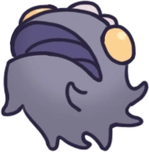
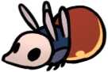

Cité des Larmes
Capitale d'Hallownest, située au centre du royaume. Elle est couverte d'une pluie perpétuelle qui provient du plafond qui la surplombe. Son nom original a été perdu dans l'histoire.
Carte
Lore
Dans le passé, la Cité Des Larmes était connue comme "la ville située au coeur de ce royaume", "le coeur d'Hallownest", et "la capitale d'Hallownest". L'un des moyens d'y accéder était de prendre la voie du pèlerin, une route partant des Routes Oubliées et traverse Vertchemin, Brumes Canyon et la Caverne Nocive se terminant à la grande porte dans la partie ouest de la Cité. Les voyageurs ont été promis que s'ils atteignaient la capitale, tous leurs souhaits seraient accordés et qu'ils pourraient partager la gloire de la Cité. Les marchandises de tout l'Hallownest étaient transportées vers la capitale, mais peu étaient renvoyées.
Les membres de la haute société d'Hallownest étaient ceux qui exerçaient le plus d'influence. Lurien le Veilleur semble avoir été l'un des personnages les plus influents de la Cité, qu'il surveillait avec son télescope dans l'Observatoire.
Lorsque l'Infection s'est répandue à Hallownest, les portes de la capitale ont été scellées pour empêcher quiconque d'entrer ou de sortir de la Cité afin d'empêcher l'Infection d'atteindre la Cité. Cependant, cela s'est avéré inutile, car toute la Cité a été infectée. L'eau s'écoule maintenant du Lac Bleu à travers le plafond de la caverne, causant de la pluie et donnant à la capitale son nom actuel.
Connexions
La Cité des Larmes est relié à ces zones :
Ennemis
-
Belfly

Une créature possédant de fines ailes qui dissimulent un ventre très instable. Elles sonneront leur propre vie pour protéger leur territoire. Une créature coléreuse sans égard pour sa propre vie. Une créature qui ne connait pas la peur... peut-on vraiment l'appeler "proie" ?
-
Carcasse Peureuse
Un insecte appartenant autrefois à l'aristocratie d'Hallownest. Rendu aggressif par la force étrange qui l'habite. Son instinct l'oblige encre parfois à fuir quand il se trouve dans une situation dangereuse. La nature peureuse et lâche des insectes d'Hallownest persiste même après leur mort ! Cela semble presque honteux de les chasser et de les abattre.
-
Carcasse Gloutonne
Un insecte appartenant autrefois à l'aristocratie d'Hallownest. Utilise son corps corpulent comme arme. En s'enrichissant, ces insectes se sont mis à chasser moins et à consommer plus. Cela leur a donné une forme grotesque. Ils ressemblent maintenant à des fruits trop mûrs.
-
Carcasse Magnifique
Carcasse corpulente couverte d'un métal brillant. Son instinct la pousse à accumuler toujours plus de Geo. Il existe beaucoup de beauté dans les choses ordinaires telles que : les reflets de la lumière dans l'eau, le goût de la viande fraîchement tuée, les pleurs d'un nouveau-né pour sa mère... Cependant, je ne comprendrais jamais l'attirance que peuvent avoir certains insectes pour les métaux et les pierres.
-
Sentinelle Vide Armée

La carapace vide d'une Grande sentinelle, qui appartenait à l'élite des gardes de la ville. Manie un estraguillon et un bouclier. Ses attaques puissantes peuvent causer de lourds dégâts. C'est une chose extrênement rare dans Hallownest, de croiser le chemin d'un créature, pouvant constituer une menace. Observez-les attentivemen, car elles peuvent attaquer rapidement avec des attaques dévastatrices.
-
Sentinelle Armée

La carapace vide d'une grande sentinelle d'Hallownest, animée par une force étrange. Une des rares créatures dans tout Hallownest assez fortes pour manier un estraguillon. Les insectes d'Hallownest sont tellement pitoyables. Ils ont eu beaucoup de chance d'avoir été infectés par des champignons toxiques, car cela augmente leurs chances de survie ! Ce sont vraiment des créatures complètement absurdes.
-
Carcasse Malmeneuse

La carapace vide d'un insecte, animé par une force étrange. Attaque férocement toutes les créatures sur son chemin qui ne sont pas infectées. Ces corps sans vie ambulants sont remplis d'une brume orange épaisse. Ça a un goût un peu sucré et maladif. C'était vraiment immonde. Je vous conseillerais de ne pas les manger après les avoir tués.
-
Carcasse Cornue

La carapace vide d'un insecte, animé par une force étrange. Utilise sa longue corne pour attaquer toutes les créatures sur son chemin qui ne sont pas infectées. Même après leur mort, ces insectes sont tellement arrogants. Ils sont beaucoup trop fiers de leur longue corne ! J'aime bien la leur arracher.
-
Carcasse Sauteuse

La carapace vide d'un insecte, animé par une force étrange. Il saute et attaque instinctivement toutes les créatures sur son chemin qui ne sont pas infectées. Les insectes de l'ancien Hallownest ne chassaient pas eux-mêmes leur nourriture. Ils préféraient qu'elle leur soit directement apportée. Cela explique pourquoi ils étaient si faibles. Cela explique aussi pourquoi leur royaume s'est effondré pour disparaître dans l'oubli.
-
Carcasse Prétentieuse
Un insecte appartenant autrefois à l'aristocratie d'Hallownest. Capacités offensives limitées. Apparamment, les insectes les plus faibles et les plus gourmands d'Hallownest étaient également ceux qui possèdaient le plus d'influence. Ce royaume était véritablement destiné à s'effondrer.
-
Sentinelle Vide

La carapace vide d’une sentinelle d’Hallownest, animée par une force étrange. Possède encore quelques bribes de souvenirs de son ancienne vie. Plus habiles au combat que la plupart des insectes d’Hallownest, ces créatures savent comment s’adapter à toutes sortes de situations. Cependant, elles possèdent une carapace légère. Maintenez-les sous pression !
-
Sentinelle à l’aiguillon long

La carapace vide d'une grande sentinelle d'Hallownest, maniant un aiguillon long. Charge l'ennemi avec son arme redoutable ou la lance à distance. La plupart du temps, cet ennemi sournois gardera ses distances et tentera de vous abattre avec son arme de jet. Attendez que cette créature vous charge, puis sautez au-dessus d'elle et frappez là en effectuant une attaque vers le bas.
-
Mouche Vengeresse

Un prédateur volant. Poursuis ses proies sans relâche. Ces féroces petits chasseurs pourchasseront même les créatures qui font plusieurs fois leur taille. Admirable! Cependant, j’en ai dévoré des centaines sans avoir fait le moindre effort, car ce sont des créatures très faibles.
-
Carcasse Vagabonde

La carapace vide d'un insecte, animé par une force étrange. Erre sur les routes où elle vivait autrefois. Ces insectes "civilisés" d'Hallownest étaient faibles de leur vivant et ils sont tout aussi faibles après leur mort. Réduisez-les à l'état de poussière !
-
Sentinelle Ailée
Une sentinelle ailée d’Hallownest. Patrouille dans les hauteurs d’une caverne immense à partir de laquelle la ville a été construite. Virevoltent dans les airs en restant hors de portée, jusqu’à ce qu’elle repère un point faible dans la défense de l’ennemi. C’est à ce moment qu’elles fondent sur l’ennemi pour porter un coup décisif. Si vous êtes assez confiant dans vos aptitudes de combat, attendez qu’elles viennent à vous pour contre-attaquer.
-
Folly
Une créature qui était autrefois très intelligente. Déformée par une mauvaise utilisation de l'Ame. J'ai entendu dire que ces fous recherchaient le secret de l'immortalité. Vivre éternellement... Je n'ai jamais rien entendu de si choquant et révoltant.
-
Erreur

Une créature qui était autrefois très intelligente. Déformée par une mauvaise utilisation de l'Ame. Ces créatures ont commis l'erreur de jouer avec l'âme des autres créatures. Maintenant déformées, elles rampent dans l'obscurité de leur sanctuaire comme des limaces, en espérant que leurs vieux frères leur créeront de nouveaux corps.
-
Tourmenteur de l’Âme

Un insecte très intelligent ! Utilise les connaissances arcaniques qu'elle possède pour transformer l'âme en des sorts vicieux. J'ai déjà entendu d'autre créatures parler de "l'âme", mais j'ignore de quoi il s'agit. Par exemple, je sais que la viande fraichement tuée à bien meilleur goût. Est-ce que c'est parce que "l'âme" s'y accroche encore ?
-
Aspid Chasseresse
Une créature chassant souvent en groupe. Terrasse ses proies en crachant un liquide corrosif. Des prédateurs astucieux qui essaieront de vous tuer à distance. Chargez dans le tas et découpez-les. Vous verrez que ce ne sont pas des créatures si rusées, une fois qu'elles sont mortes.
-
Baldur

Une créature agressive dès la naissance. Se met en boule et se propulse sur les intrus qui s’aventurent sur son territoire. Les chasseurs plus jeunent se réjouissent d’attraper ces créatures pour les faire rouler sur le sol et jouer avec. Si cela vous donne envie, je vous encourage à faire la même chose.
-
Grimm Novice
Jeune et espiègle membre de la Troupe de Grimm. Dans le cadre du rituel, il rassemble la flamme écarlate dans sa torche. Il abandonnera la flamme une fois vaincu. Les ombres rêvent d'un feu sans fin. Les flammes dévorent et les braises s'affrontent. On allumera la lanterne du cauchemar. Appeler et servir dans la Troupe redoutable de Grimm.
Boss de la Zone
Guerrier de l'Âme

Les Guerriers de l'Âme font partie des Érudits du Sanctuaire de l'Âme qui améliorent leurs techniques de combat grâce à de l'Âme recueillie. Cependant, contrairement aux autres Érudits du Sanctuaire, ils ne semblent pas se souvenir des origines de leurs pouvoirs.
Maître de L’Âme
Le Maître de l'Âme était le Chef de file du Sanctuaire de l'Âme et de ses érudits, qui recherchaient le moyen d'atteindre l'éveil véritable. Quand L’Infection a commencé, il en est venu à la conclusion que l'Âme, l'énergie animant à la fois les insectes et les bêtes, était le remède à cette peste qui rongeait leurs esprits. Il refusa d'écouter Le Roi Pâle qui s'opposa à ses expériences, et ne remarqua pas que ses projets étaient guidés par son propre esprit déjà influencé par l'Infection. Le Maître de l'Âme assembla des âmes et les consuma, gagnant peu à peu de nouveaux pouvoirs. Des Totems d'Âme parsemés dans le sanctuaire drainèrent l'énergie vitale de nombreux insectes malchanceux. Ainsi, contrairement au reste des habitants du Royaume, ses érudits et lui furent capables de survivre à l'Infection. Cependant, obsédé par sa quête d'immortalité, il perdit la raison en essayant de se rapprocher de la lumière qui guidait son esprit.
Tyran de L’Âme

Le Tyran de l'Âme est la version des rêves du Maître de l'Âme accessible dès la fin du premier combat ou en revenant dans la salle, et en frappant le corps du Maître d'Âme avec l'Aiguillon des Rêves.
Veilleur

Les chevaliers observateurs avaient l'habitude de défendre l'entrée de l'Observatoire et le corps dormant de Lurien. Ils sont finalement morts alors qu'ils montaient la garde, leurs coquilles défaussées tapissaient la pièce.
Le Collectionneur
Le Collectionneur est une créature du Vide. Il vit caché dans la Tour de l'Amour, qui est fermée à clé, en compagnie d'une vaste collection de bestioles provenant de tout Hallownest et conservées, mortes ou vivantes, dans des bocaux en verre. Bien qu'il affiche toujours une attitude joyeuse, le Collectionneur ne se préoccupe que de la préservation des autres créatures. Il a piégé les Larves de la colonie des Routes Oubliées et a noté sur une carte leur emplacement dans tout Hallownest. Malgré l'attention qu'il porte aux Larves, il n'en a que trois dans sa Tour. Il a également un lien avec l'ancien propriétaire de la Clé de la Tour, une punaise aristocrate d'Hallownest que l'on peut retrouver morte dans les Jardins de la Reine.
Évènements
- Obtention du sort : Élan Ravageur
- Obtention du sort : Âme d’ombre
- Obtention de la carte du Collectionneur
- Obtention d'une clé simple
- Obtention d'un morceau d'âme
- Obtention d'un morceau de masque
- Accès à la Tour de l'Amour
- Accès à la Maison du Plaisir
- Accès à l'Observatoire
- Accès au Sanctuaire de l'Ame
- Station Coléoptère : Station du Roi
- Station Coléoptère : Entrepôts de la Cité
- Rencontre du Chercheur de Reliques Lemm
- Rencontre du Fabricant d’Aiguillons
- Rencontre de Quirrel
- Rencontre de Hornet
- Rencontre de Millibelle la Voleuse
- Rencontre de Zote le Redoutable #3